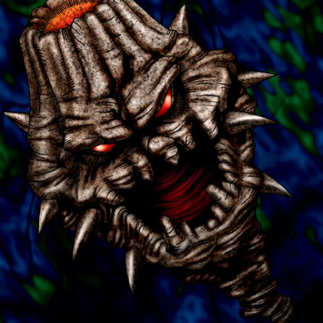

Stone Ghost

STATS
ATK: 1200
DEF: 1000DECK COST
Deck Cost per Card: 22Fusion List (7 Possible Fusions)
- Stone Ghost + Fairywitch = Mystical Sand
- Stone Ghost + Dark Elf = Mystical Sand
- Stone Ghost + Kageningen = Minomushi Warrior
- Stone Ghost + Monsturtle = Boulder Tortoise
- Stone Ghost + Queen's Double = Mystical Sand
- Stone Ghost + Turtle Raccoon = Boulder Tortoise
- Stone Ghost + Wood Clown = Minomushi Warrior